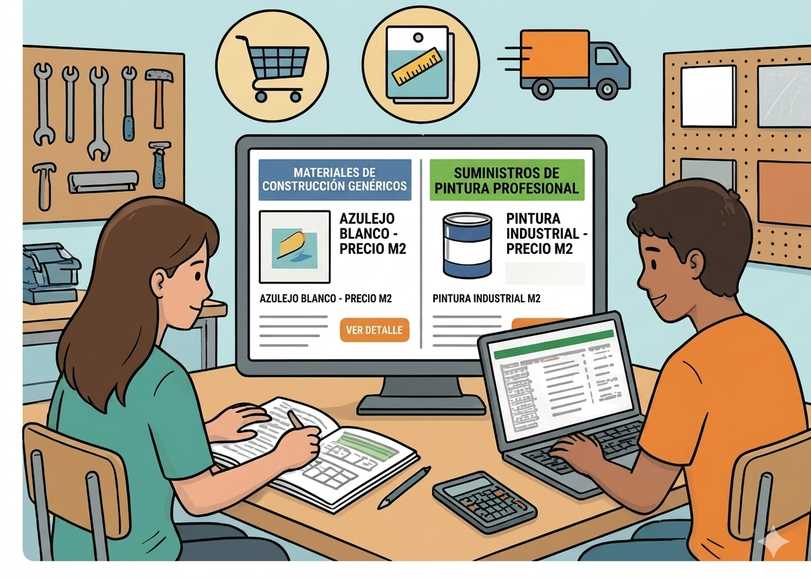

Texto

¿Qué vamos a hacer?
¡Toca ir de compras (virtuales)! Con las cantidades de la Tarea 4, buscaremos los mejores materiales en internet. Tendréis que elegir una baldosa del catálogo que ofrece la tarea y completar los cálculos que en ella se piden y calcular cuántos botes de pintura necesitamos según lo que rinda cada uno.
Organización
Tiempo: 1 h y 45 minutos.
Trabajo: Grupos cooperativos.
Lugar: Aula de informática (Google Sheets).
Paso a paso
Elección de la baldosa:
Completad la ficha "Muestrario de baldosas" con los datos obtenidos en las tareas anteriores y los cálculos que sean necesarios.
Si necesitáis refrescar vuestros conocimientos de geometría para realizar esta tarea podéis acceder a los enlaces que aparecen al final de la misma.
Shopping de Pintura y Cinta:
Buscad en la web de un centro de bricolaje.
Leed el "rendimiento" del bote (ejemplo: 10 m2/ litro). Dividid vuestra superficie de paredes por ese número para saber cuántos botes comprar.
Registro en la Nube:
Anotad el precio unitario y el enlace del producto en vuestra hoja de Google Sheets compartida.
¿Qué vamos a aprender?
A calcular las cantidades necesarias de polígonos iguales para cubrir una superficie.
A resolver problemas sencillos de cálculo de áreas y perímetros
A usar hojas de cálculo para organizar información.
Si surge algún problema…
¿El bote de pintura es muy grande? Calculad cuánto os sobrará; quizás convenga comprar dos botes pequeños en lugar de uno gigante.
Enlaces:
Perímetros
Áreas